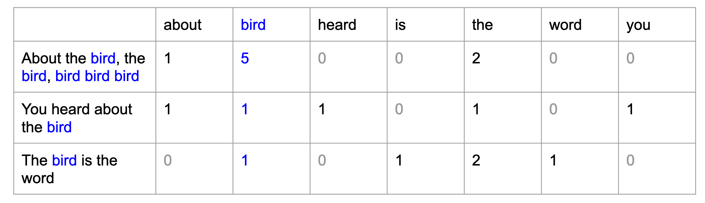

Text as data
Digital behavioral data - Extra session
Seminarplan
| Sitzung | Datum | Thema | Referent*Innen |
|---|---|---|---|
| 1 | 26.10.2022 | Kick-Off Session | Christoph Adrian |
| 2 | 02.11.2022 | DBD: Einführung und Überblick | Christoph Adrian |
| 3 | 09.11.2022 | DBD: Datenerhebung | Christoph Adrian |
| 4 | 16.11.2022 | API-Access (I): Twitter | Falk |
| 5 | 23.11.2022 | API-Access (II): YouTube | Denisov |
| 6 | 30.11.2022 | API-Access (II): Reddit | Landauer |
| 7 | 07.12.2022 | Webscraping: TikTok | Brand & Kocher |
| 8 | 14.12.2022 | Text as data | Christoph Adrian |
| WEIHNACHTSPAUSE | |||
| 9 | 11.01.2023 | ESM: m-path | Dörr |
| 10 | 18.01.2023 | Data Donations | Hofmann & Wierzbicki |
| 11 | 25.01.2023 | PUFFER | |
| 12 | 02.02.2023 | Guest Lecture: Linking DBD & Survey data | Johannes Breuer |
| 13 | 08.02.2023 | Semesterabschluss & Evaluation | Christoph Adrian |
▶️
⚠️Terminkonflikt
Agenda
- A short introduction
- Case Study: Amazon Reviews
- ☕ Kursevluation
- Sentiment Analysis
- Topic Modeling
A short introduction
im Fokus: Text as data
Nicht neu, aber andere Dimension
Das Phänomen Text as data
Lange Tradition der Text- und Inhaltsanalyse (besonders in der Kommunikationswissenschaft)
Neue Chancen & Herausforderungen durch explosionsartige Vergrößerung des (Text-)Datenaufkommen in den letzten Jahren (Websites, Plattformen & Digitalisierung)

Neue Quellen, Neue Methoden, neue Möglichkeiten
Verschiedene Textgrundlagen als Beispiel
Possibilities over possibilities
Überblick über verschiedene Methoden der Textanalyse
Case study: Reviews
üïµÔ∏è ‚≠ê‚≠ê‚≠ê‚≠ê‚≠ê


But … why?
Im Fokus: üíä Di√§tpillen
Hintergrund
- Reviews von fünf “Diätpillen”
- Automatisch Scraping via eigener R-Funktion
- Datensatz mit knapp über 2000 Reviews (ohne Bereinigung)
- Exemplarische Darstellung folgender Schritte:
Text-Processing
Sentiment-Analyse
Topic Modeling
Ausführliche Schritte im Google Colab & Showcase
Hier nur Auszüge
Quick scraping step-by-step
1️⃣ Custom function für Export der html-Elemente
scrape_amazon <- function(page_num, review_url) {
url_reviews <- paste0(review_url, "&pageNumber=", page_num, "&sortBy=recent")
doc <- read_html(url_reviews)
map_dfr(doc %>% html_elements("[id^='customer_review']"), ~ data.frame(
review_title = .x %>% html_element(".review-title") %>% html_text2(),
review_text = .x %>% html_element(".review-text-content") %>% html_text2(),
review_star = .x %>% html_element(".review-rating") %>% html_text2(),
date = .x %>% html_element(".review-date") %>% html_text2() %>% gsub(".*vom ", "", .),
author = .x %>% html_element(".a-profile-name") %>% html_text2(),
page = page_num
)) %>%
as_tibble %>%
return()
}Quick scraping step-by-step
2️⃣ Definition von Amazon Review URLs
url <- list(
p01 = "https://www.amazon.de/LINEAVI-Eiwei%C3%9F-Shake-Kombination-Molkeneiwei%C3%9F-laktosefrei/product-reviews/B018IB02AU/ref=cm_cr_dp_d_show_all_btm?ie=UTF8&reviewerType=all_reviews",
p02 = "https://www.amazon.de/Detoxkuren%E2%80%A2-Entw%C3%A4sserung-Entschlackung-Stoffwechsel-entschlacken/product-reviews/B072QW5ZN1/ref=cm_cr_dp_d_show_all_btm?ie=UTF8&reviewerType=all_reviews",
p03 = "https://www.amazon.de/Saint-Nutrition%C2%AE-KETO-BURN-Appetitz%C3%BCgler/product-reviews/B08B67V8G5/ref=cm_cr_dp_d_show_all_btm?ie=UTF8&reviewerType=all_reviews",
p04 = "https://www.amazon.de/Yokebe-vegetarisch-Mahlzeitersatz-Gewichtsabnahme-hochwertigen/product-reviews/B08GYZ8LRB/ref=cm_cr_dp_d_show_all_btm?ie=UTF8&reviewerType=all_reviews",
p05 = "https://www.amazon.de/Vihado-Liquid-chlorophyll-drops-alfalfa/product-reviews/B093XNC8QH/ref=cm_cr_arp_d_paging_btm_next_2?ie=UTF8&reviewerType=all_reviews"
)Quick scraping step-by-step
3️⃣ Scrape with for-loops
amazon <- list()
# p01
for (i in 1:79) {
df <- scrape_amazon(page_num = i, review_url = url$p01)
amazon$raw$p01[[i]] <- df
}product <- names(url)
# bind rows for each product
for (i in product) {
amazon$data$raw[[i]] <- amazon$raw[[i]] %>%
bind_rows() %>%
rownames_to_column("id") %>%
mutate(across(id, as.numeric))
}
# bind rows of all products
amazon$data$full <- amazon$data$raw %>%
bind_rows(.id = "src")Quick scraping step-by-step
4️⃣ Endresultat
amazon$data$full %>%
glimpse()Rows: 2,142
Columns: 8
$ src <chr> "p01", "p01", "p01", "p01", "p01", "p01", "p01", "p01", "…
$ id <dbl> 1, 2, 3, 4, 5, 6, 7, 8, 9, 10, 11, 12, 13, 14, 15, 16, 17…
$ review_title <chr> "Schmeckt wie ein angenehmer Milchshake", "Nicht zufriede…
$ review_text <chr> "Wie ich damit abgenommen haben kann ich noch nicht sagen…
$ review_star <chr> "4,0 von 5 Sternen", "2,0 von 5 Sternen", "5,0 von 5 Ster…
$ date <chr> "Kundenrezension aus Deutschland üá©üá™ am 26. November 2022"‚Ķ
$ author <chr> "Rayan Wehbi", "Motte", "V.K", "niw", "Murphy", "Julia", …
$ page <int> 1, 1, 1, 1, 1, 1, 1, 1, 1, 1, 2, 2, 2, 2, 2, 2, 2, 2, 2, …Explorative Datenanalyse
Im Fokus: üîç Reviews
Anzahl der Reviews nach Produkt
Kennenlernen des Datensatzes
amazon$data$de %>%
frq(src)src <categorical>
# total N=1736 valid N=1736 mean=2.88 sd=1.46
Value | N | Raw % | Valid % | Cum. %
--------------------------------------
p01 | 438 | 25.23 | 25.23 | 25.23
p02 | 256 | 14.75 | 14.75 | 39.98
p03 | 509 | 29.32 | 29.32 | 69.30
p04 | 143 | 8.24 | 8.24 | 77.53
p05 | 390 | 22.47 | 22.47 | 100.00
<NA> | 0 | 0.00 | <NA> | <NA>Anzahl der Reviews nach Produkt im Zeitverlauf
Kennenlernen des Datensatzes
amazon$data$de %>%
ggplot(aes(year, fill = src)) +
geom_bar() +
scale_fill_locuszoom() +
theme_pubr()
Bewertungen der Produkte: Absolute Zahlen
Kennenlernen des Datensatzes
amazon$data$de %>%
mutate(across(rating, as.factor)) %>%
ggplot(aes(src, fill = rating)) +
geom_bar() +
scale_fill_brewer(palette = "RdYlGn") +
theme_pubr()
Bewertungen der Produkte: Kummulierte Anteile
Kennenlernen des Datensatzes
amazon$data$de %>%
mutate(across(rating, as.factor)) %>%
ggplot(aes(src, fill = rating)) +
geom_bar(position = "fill") +
scale_fill_brewer(palette = "RdYlGn") +
theme_pubr()
☕ Kursevaluation
Bitte nehmen Sie über den QR Code oder folgenden Link an der Evaluation teil:
Losung: QNWVC
Text processing
Kurze Erklärung der Grundbegriffe Korpus, Token & DFM
Vom Korpus bis zum Model
Prozess der Textverarbeitung

Sätze – Token – Lemma – POS
Vorverarbeitungsschritte für Textanalyse
Was gibt’s in New York zu sehen?
was; gibt; `s; in; new; york; zu; sehen; ?
was; geben; `s; in; new; york; zu; sehen; ?
>Was/PWS >gibt/VVFIN >’s/PPER >in/APPR >New/NE >York/NE >zu/PTKZU >sehen/VVINF
Satzerkennung: Auflösung der Satzstruktur; Aber: Probleme mit Datumsangaben, Uhrzeit, Abkürzungen, URLS
Tokenisierung: Zerteilung in kleinste Einheiten, Abtrennung von Satzzeichen; Fragen: Umgang mit Zeichen, Symbolen, Zahlen, N-Gramme …
Definition Lemmatisierung: Grundform eines Worters, als diejenige Form, unter dem an einen Begriff in einem Nachschlagewerk findet / Rückführung auf die „Vollfrom”
Definition POS: Zuordnung von Wörtern und Satzzeichen eines Textes zu Wortarten
Von BOW zu DFM
Bag-of-words (BOW) und Document-Feature-Matrix (DFM)

Bag-of-Words-Modell: es zählt lediglich die Worthäufigkeit je Dokument, die syntaktischen und grammatikalischen Zusammenhänge zwischen einzelnen Wörtern werden ignoriert.
Sentiment Analyse
üëé & üëç?
The good, the bad and the ugly
Grundidee & Ziele und der Sentimentanalyse
Auf Basis von speziellen Wortlisten bzw. Lexika werden bestimmte Begriffe ausgezählt, denen zuvor entweder ein numerischer Wert (Score) oder eine Kategorien (positiv oder negativ) zugeordnet wurden.
Ziel ist die Bestimmung der Polarität (positive/negative Emotion) eines Textes
Aber: Wie gut ist die Klassifizierung?
Grundlagen für die Analyse
Hintergrundinformationen zum Processing & Scoring
Die Verarbeitung und Analyse der Daten erfolgt mit dem
quantedabzw.quanteda.textstatPaket und basiert nur auf dem Korpus der deutschen ReviewsAls Sentiment-Grundlage wird SentiWS genutzt
öffentlich verfügbare deutschsprachige Ressource für die Sentiment Analyse, Opinion Mining und ähnliche Zwecke
positive und negative Polarität im Intervall [-1; 1] für enthaltene Wörter die angegeben, sowie deren Wortart
enthält ungefähr 1.650 positive und 1.800 negative Grundformen
und (falls anwendbar) Flexionsvarianten
so dass, inklusive der verschiedenen Flexionsformen, insgesamt etwa 16.000 positive und 18.000 negative Wortformen enthalten sind. SentiWS enthält nicht nur Adjektive und Adverbien, sondern auch Nomen und Verben die Träger von Sentiment sind
Erste Ergebnisse
Bewertung der verschiedenen Diätpillen
amazon$data$de_senti %>%
ggplot(aes(x = src, y = valence)) +
ggdist::stat_halfeye(
aes(fill = src),
adjust = .5,
width = .6,
.width = 0,
justification = -.3,
point_colour = NA) +
geom_boxplot(
aes(color = src),
width = .25,
outlier.shape = NA
) +
geom_point(
aes(color = src),
size = 1.3,
alpha = .3,
position = position_jitter(
seed = 1, width = .1
)
) +
coord_cartesian(xlim = c(1.2, NA), clip = "off") +
scale_color_startrek() +
scale_fill_startrek() +
theme_pubr()Warning: Using the `size` aesthietic with geom_segment was deprecated in ggplot2 3.4.0.
ℹ Please use the `linewidth` aesthetic instead.
Valence = average valence of document, based on a dictionary whose values have numeric valence scores.
Ein großes “… , ABER …”
Kritische Anmerkungen zur Sentimentanalyse
amazon$data$de_senti %>%
flat_table(rating, val_fct) val_fct negativ neutral positiv
rating
1 167 40 101
2 61 11 37
3 47 14 48
4 34 10 129
5 109 16 912Probleme der “dictionary method” mit Negationen (“nicht gut”) und “Verstärkern” (“sehr gut”)
Besser: Codierung bzw. Klassifizierung mit Hilfe von überwachtem maschinellem Lernen
Topic Modeling
Grundidee und beispielhafter Ablauf
Grundidee
Quick Introduction to Topic Modeling
Verfahren des unüberwachten maschinellen Lernens, das sich daher insbesondere zur Exploration und Deskription großer Textmengen eignet
Themen werden strikt auf Basis von Worthäufigkeiten in den einzelnen Dokumenten vermeintlich objektiv berechnet, ganz ohne subjektive Einschätzungen und damit einhergehenden etwaigen Verzerrungen
Bekanntesten dieser Verfahren sind LDA (Latent Dirichlet Allocation) sowie die darauf aufbauenden CTM (Correlated Topic Models) und STM (Structural Topic Models)
Annahmen
Quick Introduction to Topic Modeling
Ein Textkorpus besteht aus
DDokumenten undVWörtern bzw. TermsEs wird nun angenommen, dass latente Themen
Kzu unterschiedlichen Anteilen in den DokumentenDvorkommen und alle WörterVmit unterschiedlicher Wahrscheinlichkeit zu denKThemen gehören.Ziel der Verfahren ist die Berechnung zweier Matrizen
D×KundV×K.Die erste Matrix
D×Kenth√§lt f√ºr jedes einzelne Dokumentdund jedes einzelne Themakdie Wahrscheinlichkeit, dass das Thema in diesem Dokument vorkommt (ùöπ).Analog enth√§lt
V×Kf√ºr jedes einzelne Wortwund jedes einzelne Themakdie Wahrscheinlichkeit, dass das jeweilige Wort in diesem Thema vorkommt (ùõÉ).
- Mit Hilfe dieser Matrizen können die Themen dann beschrieben und interpretiert werden.
So können aus
V×Kdie wichtigsten Wörter je Thema (d.h., die Wörter mit der höchsten konditionalen Wahrscheinlichkeit, zu einem bestimmten Thema kk zu gehören) abgelesen werden;mittels
D×Kkönnen Themen Dokumenten und umgekehrt zugeordnet werden, z. B. in dem für jedes Dokument dd das Thema kk mit der höchsten konditionalen Wahrscheinlichkeit identifiziert wird.
- Zur Berechnung dieser Matrizen wird sozusagen der umgekehrte Weg gegangen und die Erzeugung der Dokumente als statistischer Prozess beschrieben: ein Dokument wird demnach erzeugt, in dem zufällig Themen aus der zum Dokument zugehörigen Themenverteilung und Wörter aus der den Themen zugehörigen Wortverteilungen gezogen werden. Hierzu wird das Topic Model zunächst mit zufälligen Themen- und Wortverteilungen initialisiert und dann in einem iterativen, algorithmischen Verfahren nach und nach adaptiert, bis es möglichst gut zu den Daten (dem Textkorpus) passt (d.h. die gemeinsame Likelihood der Themen- und Wortverteilungen maximiert wird).53
Structual Topic Modeling im Fokus
Idee und Hintergrund von STM
ùõ¥ = Topic covariance
x = Prevalende Metadata
gamma = Metadata weights
smaller box = N = number of words in a document
bigger box = M = number of documents in a corpus
Welches K?
Bestimmung der optimalen Themenanzahl
amazon$tpm$model_scores %>%
transmute(
k,
`Lower bound` = lbound,
Residuals = map_dbl(residual, "dispersion"),
`Semantic coherence` = map_dbl(semantic_coherence, mean),
`Held-out likelihood` = map_dbl(eval_heldout, "expected.heldout")) %>%
pivot_longer(-k, names_to = "Metric", values_to = "Value") %>%
ggplot(
aes(k, Value, color = Metric)) +
geom_line(size = 1.5, alpha = 0.7, show.legend = FALSE) +
facet_wrap(~Metric, scales = "free_y") +
labs(x = "K (number of topics)",
y = NULL,
title = "Model diagnostics by number of topics")Warning: Using `size` aesthetic for lines was deprecated in ggplot2 3.4.0.
ℹ Please use `linewidth` instead.
Kombination aus Kohärenz & Exklusivität
Bestimmung der optimalen Themenanzahl
amazon$tpm$model_scores %>%
select(k, exclusivity, semantic_coherence) %>%
filter(k %in% c(5, 7, 11)) %>%
unnest(cols = c(exclusivity, semantic_coherence)) %>%
mutate(k = as.factor(k)) %>%
ggplot(aes(semantic_coherence, exclusivity, color = k)) +
geom_point(size = 2, alpha = 0.7) +
labs(x = "Semantic coherence",
y = "Exclusivity",
title = "Comparing exclusivity and semantic coherence",
subtitle = "Models with fewer topics have higher semantic coherence for more topics, but lower exclusivity") 
Top Features der Themen
Interpretation des Models
amazon$stm$mdl %>% labelTopics()Topic 1 Top Words:
Highest Prob: tropfen, geschmack, chlorophyll, wasser, wirkung, schmeckt, schon
FREX: tropfen, chlorophyll, glas, grün, farbe, flasche, konnten
Lift: alfalfa, dosieren, farbe, frisch, geladen, glas, grüne
Score: tropfen, chlorophyll, farbe, grün, geladen, medien, wirkung
Topic 2 Top Words:
Highest Prob: produkt, super, nehme, seit, mehr, sagen, wirklich
FREX: nehme, gutes, begeistert, seit, wirkt, hilft, überrascht
Lift: begeistert, detox, entgiften, entschlacken, gutes, pfirsich, teste
Score: produkt, seit, nehme, weiteren, super, gutes, hilft
Topic 3 Top Words:
Highest Prob: gut, dass, tag, tagen, ganz, finde, besser
FREX: ganz, finde, möchte, produkte, tagen, anfang, wenig
Lift: anfang, soweit, generell, produkte, komisch, versucht, möchte
Score: gut, generell, finde, dass, ganz, tag, tagen
Topic 4 Top Words:
Highest Prob: schmeckt, geschmack, shake, lineavi, shaker, pulver, lecker
FREX: shake, lineavi, shaker, pulver, lecker, shakes, almased
Lift: anleitung, dosen, ersetzt, aktivkost, almased, classic, diätshake
Score: lineavi, shaker, shake, almased, pulver, shakes, milch
Topic 5 Top Words:
Highest Prob: schon, wochen, leider, kapseln, abgenommen, sport, abnehmen
FREX: kapseln, abgenommen, tabletten, geld, bringt, sport, schlucken
Lift: abgenommen, achten, burn, gebracht, gegenteil, geld, geldverschwendung
Score: kapseln, tabletten, keto, burn, abgenommen, sport, kilo Prevalence der Themen
Interpretation des Models
amazon$stm$preval$tgt %>%
ggplot(aes(topic, gamma, label = terms, fill = topic)) +
geom_col(show.legend = FALSE) +
geom_text(hjust = 1.1, nudge_y = 0.0005, size = 3, color = "white") +
coord_flip() +
scale_y_continuous(expand = c(0, 0), limits = c(0, 0.35), labels = scales::percent) +
theme_bw() +
theme(panel.grid.minor = element_blank(),
panel.grid.major = element_blank()) +
labs(x = NULL, y = expression(gamma)) +
scale_fill_jama()
Validieren, Validieren, Validieren
Kritisiche Anmerkungen zum Topic Modeling
Automated text analysis methods can substantially reduce the costs and time of analyzing massive collections of political texts. When applied to any one problem, however, the output of the models may be misleading or simply wrong. […] What should be avoided, then, is the blind use of any method without a validation step (Grimmer & Stewart, 2013, S. 5).
Klassifikationsmodell klassifiziert alle Dokumente, ein Diktionär spuckt für jedes Dokument ein Ergebnis aus, ein Topic Model findet immer die vorgegebene Anzahl an Themen.
Ob es sich dabei auch um inhaltlich sinnvolle Ergebnisse handelt, kann und muss durch manuelle Validierungen festgestellt werden.
Moderne Verfahren (z.B. BERT) potentiell besser geeignet für bestimmte Texte